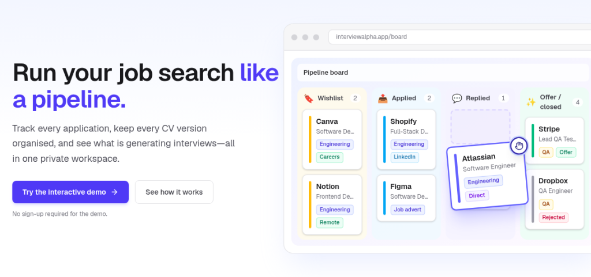

InterviewAlpha guides
Want a clearer way through the job hunt? These short guides cover the practical bits: tracking applications without a spreadsheet, seeing which CV versions earn interviews, following up without the spiral, and a 15-minute weekly review. Built around organisation, next steps, and a simple feedback loop, not spray-and-pray.

Guide 1
How to track job applications without a spreadsheet
Ditch endless rows. A pipeline with stages, next steps, and CV versions kept in one place.
Guide 2
How to tell which CV version is getting interviews
Label versions, track honest denominators, and treat small samples as early indications.
Guide 3
What to do after you apply (a calm follow-up system)
Clear stages, one next step, and gentle timing, without chasing or spiralling.
Guide 5
A weekly job-search review that takes 15 minutes
Clean the board, set next steps, and glance at which CV versions are earning interviews.